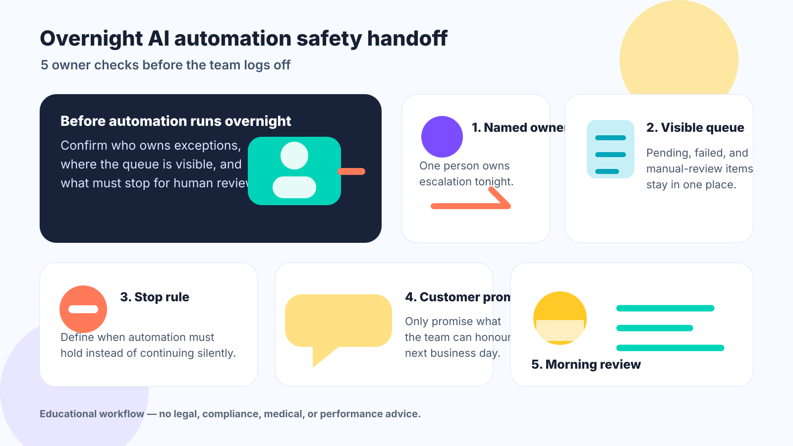

1. Name the owner
Every overnight workflow needs one named owner for escalation. If nobody owns exceptions, the automation is not ready to run unattended.
Evening publication · Safe educational workflow
A safe educational checklist for small teams that run AI, forms, chatbots, reminders, or workflow automation after business hours.
Boundary: Educational workflow — no legal, compliance, medical, or performance advice.

Every overnight workflow needs one named owner for escalation. If nobody owns exceptions, the automation is not ready to run unattended.
Pending leads, customer questions, failed jobs, and manual reviews should land in one visible queue the next team member can check.
Decide which signals should make automation hold for human review instead of continuing silently.
Automatic replies should only make promises the team can honour on the next business day.
Start the next morning by checking exceptions, failed messages, and manual-review items before adding new automation.
This is a simple operating checklist for owners and managers. It does not replace professional legal, compliance, medical, security, or platform-specific advice.
Tonight's automation owner: ____ · Queue: ____ · Stop rule: ____ · Customer promise: ____ · Morning reviewer: ____
If you want AICS to review your after-hours lead and automation flow, book a free business review or message us on WhatsApp.